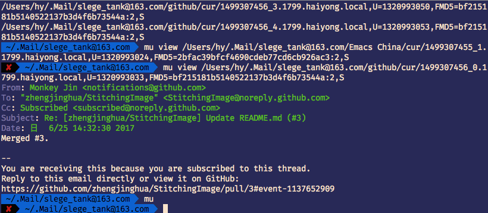

Mail with Emacs
开始
为什么？除了作为一个Emacs重度用户的生活需要外，现行的邮件客户端有以下特性无法满足我：
1 搜索功能太弱，条件、正则无法使用
2 编辑功能太弱；富文本编辑起来太麻烦
而这些，正是Emacs所擅长的。
然后，就面临一个在Emacs里选择用哪个方案的问题。我至少需要以下特性：
1 强大的搜索功能
2 自动同步，并且提醒我未读邮件数量
3 多账户
4 联系人
5 强大灵活的富文本编辑–在emacs里，这就是指org mode。
Emacs上方案并不少，挑来挑去，最后就落在了是用Emacs原生的Gnus还是用第三方的mu4e上面了。开始我还是很倾向于用Gnus的，毕竟系统原生，也是陈斌 所推荐的方案。而mu4e则需要一大堆额外配置，很是麻烦。于是开始折腾。
但是我试用的过程中，发现问题很大。比如Gnus在同步邮件时会卡死整个Emacs；而由于Gnus一开始是作为阅读新闻组的插件出现的，所以处理邮件的行为非常奇怪，跟我理想中的邮件客户端差距甚远。所以只好开始研究mu4e。搞着搞着，发现这个真的很好用，其实这也修正了我对Emacs的一些认识，即Emacs的长处其实就是作为一个文本处理的前端；后端有更专业的软件提供接口来与Emacs交互。比如在编辑js的时候的语法检查可以用eslint作为后端，而Emacs里面用flycheck作为与其交互的插件。这样，每个功能的提供者都能关注自己的部分，做出功能紧凑、重用性高的软件。
其实mu4e的方案非常符合GNU/Linux的哲学思想，即：
1 一切皆文件
2 小型，单一用途的程序
3 连接程序，共同完成复杂功能
4 避免令人困惑的用户界面
5 配置数据存储在文本中
Emacs中有很多此类的应用，这里不再多说。本文用于记录折腾mu4e过程中的一些坑以及一些经验，以帮助后来人以及整理自己的知识。
注：本文仍然以mac作为环境。
总体结构
| offlineimap | 用于同步本地、服务器邮件，将其储存在本地的maildir 中。 |
| mu | 周期性的将maildir中的邮件信息序列化，存储到数据库里，提供访问接口。 |
| mu4e | mu的Emacs端插件，提供更好的UI访问mu。 |
| smtpmail | Emacs内置的发送插件，因此会造成卡顿，但问题不大。 |
offlineimap
github: https://github.com/OfflineIMAP/offlineimap
官方文档：http://www.offlineimap.org
首先安装：
brew install offlineimap
启动：
;; Startup brew services start offlineimap ;; or offlineimap
安装完成后，创建配置文件~/.offlineimaprc，写入如下配置：
[DEFAULT] postsynchook = python ~/offlineimapnotify.py // 同步之后调用，可以用来检测是否有新邮件 [general] ui=TTYUI accounts = 163 autorefresh = 5 [Account 163] localrepository = 163-Local remoterepository = 163-Remote [Repository 163-Local] type = Maildir // https://en.wikipedia.org/wiki/Maildir localfolders = ~/.Mail/YOUR_ACCOUNT [Repository 163-Remote] type = IMAP remotehost = imap.163.com remoteuser = YOUR_ACCOUNT // 你的账户 remotepass = YOUR_PASS // 你的密码 realdelete = no ssl = yes sslcacertfile = /usr/local/etc/openssl/cert.pem // macos专用 maxconnections = 1
在命令行输入offlineimap，offlineimap就会尝试进行邮件同步了。
问题1
当收到邮件提示："网易邮箱提醒：阻止了一次不安全的收信请求"之后，登录页面：
http://config.mail.163.com/settings/imap/index.jsp?uid=YOUR_EMAIL_NAME@163.com
将YOUR_EMAIL_NAME替换为自己的账户名，解锁一下offlineimap就可以正常工作了。
问题2
同步完成后，你可以到~/.Mail下看看下载的邮件。
Perfect!
问题3
同步时有可能出现以下错误：
ERROR: Exceptions occurred during the run!
ERROR: IMAP server 'linkplay-Remote' does not have a message with UID '1777'
此时可以选择对其进行忽略(http://www.offlineimap.org/configuration/2016/07/18/ignoring-UIDs.html)：
copy_ignore_eval = lambda foldername: {'INBOX': [1777]}.get(foldername)
改进1
同步之后的脚本可以这么写：
newMailCount = int(os.popen(os.path.expanduser("ls ~/.Mail/*/INBOX/new/* | wc -l") ).read().strip()) if newMailCount > 0: os.system("osascript -e \'display notification \"You have %d unread mails\" with title \"Mail\" sound name \"Glass\"\'" % newMailCount)
这样当收到新邮件之后将会弹框提示，是不是很美？
mu
安装：
brew install mu --with-emacs --HEAD
安装完成后，就可以对通过命令行对offlineimap同步的邮件进行检索了，很好很强大 。第一次安装完成后，最好手动对下载的邮件进行index一下：
mu index --maildir=~/.Mail
这可能会花一些时间。这样，mu就将邮件文件夹内的信息序列化到xapian数据库里。
完成后，就可以通过命令行对邮件进行检索了：

mu4e
然后，就到了重头戏：mu4e。mu4e对mu进行了一些lisp封装，在Emacs中提供更友好的UI。
通过brew安装的mu4e会默认以/usr/local/emacs为当前的Emacs，而相对应的el文件则保存在/usr/local/share/emacs/site-lisp下，所以在配置文件中要设置一下，不然找不到：
(let ((default-directory "/usr/local/share/emacs/site-lisp/")) (normal-top-level-add-subdirs-to-load-path))
(setq mu4e-maildir "~/.Mail" ;; top-level Maildir mu4e-sent-folder "/sent" ;; folder for sent messages mu4e-drafts-folder "/drafts" ;; unfinished messages mu4e-trash-folder "/trash" ;; trashed messages mu4e-refile-folder "/archive") ;; saved messages
work flow
基本上都是在header view这个页面。
| key | func |
|---|---|
| ! | mark to flag/unflag |
| * | mark to read/unread |
| d | mark to delete |
| x | apply mark |
| u | unmark |
| U | unmark all |
| R | respond |
| F | forward |
| E | edit draft |
| T | read all thread file |
| a | actions |
用户可以自定义actions(a)，我用的有下面的几个：
| key | func |
|---|---|
| c | capture, 将邮件相关信息保存在剪贴板和org-stored-links里，方便在org mode中相关操作 |
| s | show thread |
send
(setq message-send-mail-function 'smtpmail-send-it) (setq smtpmail-smtp-server "smtp.example.org")
本地不处理已发邮件:
(setq mu4e-sent-messages-behavior 'delete)